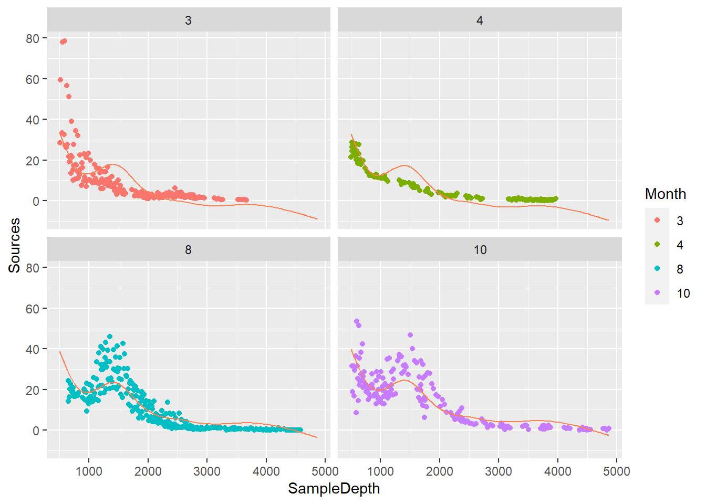
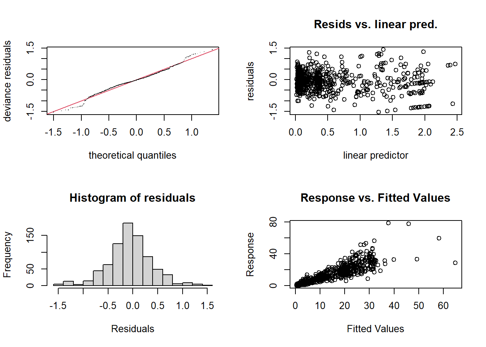
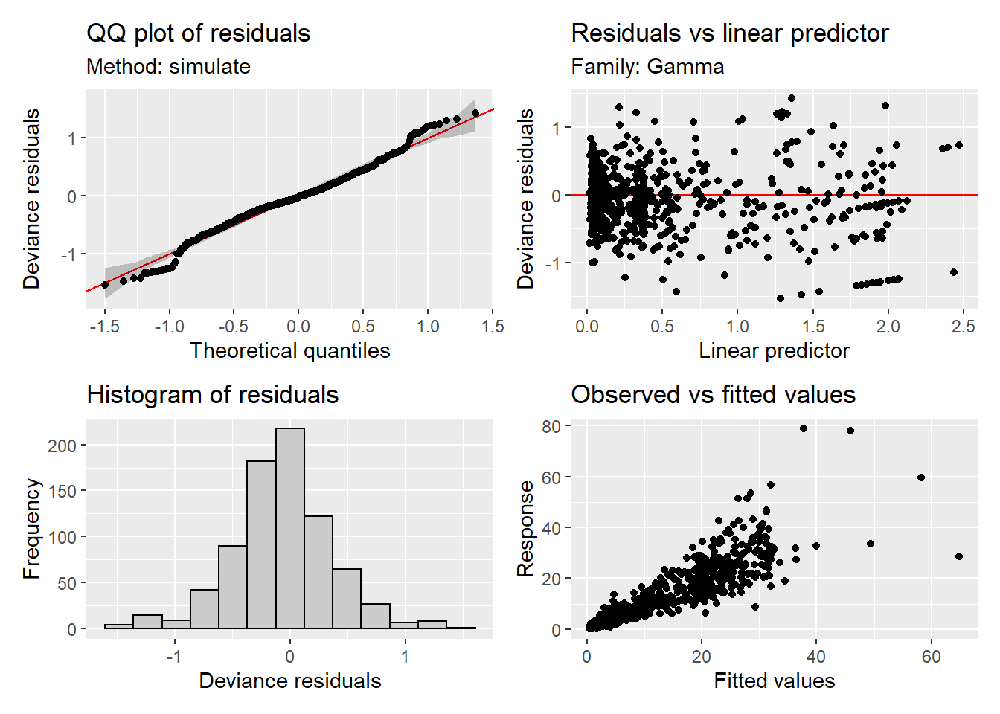

3 Modelos no lineales
3.1 Regresión no paramétrica
Se tomaron medidas del peso seco (peso.seco) y del largo (largo) de una especie de almeja (almejas.txt). Analizar la relación entre el largo y el peso seco.
## 'data.frame': 398 obs. of 3 variables:
## $ mes : int 11 11 11 11 11 11 11 11 11 11 ...
## $ largo : num 28.4 16.6 13.7 17.4 11.8 ...
## $ peso.seco: num 0.248 0.052 0.028 0.07 0.022 0.187 0.361 0.05 0.087 0.128 ...# opción 1
plot(almejas$largo, almejas$peso.seco, pch = 19, xlab = "Largo", ylab = "Peso")
loess.model <- loess(peso.seco ~ largo, data = almejas)
largo <- seq(min(almejas$largo), max(almejas$largo), length = 500)
predPeso <- predict(loess.model, newdata = data.frame(largo))
lines(largo, predPeso, col = "blue", lwd = 2)## Loading required package: carData3.2 Regresión polinómica
# Simulamos dos variables
set.seed(99)
x <- rnorm(500, mean = 0, sd = 1)
y <- 2 - x + 0.2*x^2 + x^3 + rnorm(500, 0, 2)
plot(x, y)
## Analysis of Variance Table
##
## Response: y
## Df Sum Sq Mean Sq F value Pr(>F)
## x 1 2270.96 2270.96 544.00 < 2.2e-16 ***
## I(x^2) 1 86.04 86.04 20.61 7.076e-06 ***
## I(x^3) 1 2123.63 2123.63 508.70 < 2.2e-16 ***
## Residuals 496 2070.59 4.17
## ---
## Signif. codes: 0 '***' 0.001 '**' 0.01 '*' 0.05 '.' 0.1 ' ' 1##
## Call:
## lm(formula = y ~ x + I(x^2) + I(x^3))
##
## Residuals:
## Min 1Q Median 3Q Max
## -6.3763 -1.3071 -0.1047 1.5228 6.9486
##
## Coefficients:
## Estimate Std. Error t value Pr(>|t|)
## (Intercept) 2.08920 0.11498 18.171 < 2e-16 ***
## x -0.67260 0.15063 -4.465 9.91e-06 ***
## I(x^2) 0.12711 0.06716 1.893 0.059 .
## I(x^3) 0.93229 0.04134 22.554 < 2e-16 ***
## ---
## Signif. codes: 0 '***' 0.001 '**' 0.01 '*' 0.05 '.' 0.1 ' ' 1
##
## Residual standard error: 2.043 on 496 degrees of freedom
## Multiple R-squared: 0.6839, Adjusted R-squared: 0.682
## F-statistic: 357.8 on 3 and 496 DF, p-value: < 2.2e-163.3 Funciones a trozos
x.categorica <- cut(x, breaks = 10) # Dividimos la variable en 10 intervalos
fun.trozos <- lm(y ~ x.categorica)
summary(fun.trozos)##
## Call:
## lm(formula = y ~ x.categorica)
##
## Residuals:
## Min 1Q Median 3Q Max
## -7.1982 -1.3038 -0.1617 1.4424 10.5097
##
## Coefficients:
## Estimate Std. Error t value Pr(>|t|)
## (Intercept) -16.1963 0.9759 -16.60 <2e-16 ***
## x.categorica(-2.49,-1.93] 10.9342 1.1770 9.29 <2e-16 ***
## x.categorica(-1.93,-1.37] 15.8749 1.0567 15.02 <2e-16 ***
## x.categorica(-1.37,-0.809] 17.6050 1.0112 17.41 <2e-16 ***
## x.categorica(-0.809,-0.247] 18.3686 0.9987 18.39 <2e-16 ***
## x.categorica(-0.247,0.314] 18.7227 0.9993 18.73 <2e-16 ***
## x.categorica(0.314,0.876] 18.1608 1.0046 18.08 <2e-16 ***
## x.categorica(0.876,1.44] 18.8814 1.0193 18.52 <2e-16 ***
## x.categorica(1.44,2] 21.3350 1.0656 20.02 <2e-16 ***
## x.categorica(2,2.57] 28.9138 1.1484 25.18 <2e-16 ***
## ---
## Signif. codes: 0 '***' 0.001 '**' 0.01 '*' 0.05 '.' 0.1 ' ' 1
##
## Residual standard error: 2.182 on 490 degrees of freedom
## Multiple R-squared: 0.6438, Adjusted R-squared: 0.6373
## F-statistic: 98.41 on 9 and 490 DF, p-value: < 2.2e-16pred <- predict(fun.trozos)
df <- data.frame(x, x.categorica, y, pred)
# Sin lÃÂneas verticales
library(ggplot2)## Warning: package 'ggplot2' was built under R version 4.0.5ggplot(data = df, aes(x, pred, group = x.categorica)) +
geom_line(col = "blue", size = 1) +
geom_point(data = df, aes(x, y))
# Con lÃÂneas verticales
ggplot(data = df, aes(x, pred)) +
geom_step(col = "blue", size = 1) +
geom_point(data = df, aes(x, y))
3.4 Splines de regresión
3.4.1 Polinomios a trozos
# Ejemplo de un polinomio cúbico con 1 nodo
data.split <- data.frame(x, y, x2cat = cut(x, breaks = 2))
pol.cat1 <- lm(y ~ x + I(x^2) + I(x^3), data = subset(data.split, x2cat == "(-3.06,-0.247]"))
pol.cat2 <- lm(y ~ x + I(x^2) + I(x^3), data = subset(data.split, x2cat == "(-0.247,2.57]"))
pred.polcat1 <- predict(pol.cat1)
pred.polcat2 <- predict(pol.cat2)
df1 <- data.frame(subset(data.split, x2cat == "(-3.06,-0.247]"), pred = pred.polcat1)
df2 <- data.frame(subset(data.split, x2cat == "(-0.247,2.57]"), pred = pred.polcat2)
ggplot() +
geom_line(data = df1, aes(x, pred), col = "blue", size = 2) +
geom_line(data = df2, aes(x, pred), col = "red", size = 2) +
geom_point(data = data.split, aes(x, y)) +
geom_vline(xintercept = -0.247, linetype = "dashed")
# Comparación entre la regresión polinómica y splines de regresión
library(splines)
reg.pol <- lm(y ~ poly(x, degree = 10))
plot(x, y, col = "grey", ylim = c(-25, 30))
nodos <- seq(-3, 2.5, length = 10) # Ubicación de los nodos
spline.cub <- lm(y ~ bs(x, degree = 3, knots = nodos)) # Spline cúbico
spline.nat <- lm(y ~ ns(x, knots = nodos)) # Spline natural
# Gráficos de los modelos
x.new <- seq(min(x), max(x), length = 500)
predP <- predict(reg.pol, newdata = data.frame(x = x.new)) # regresión polinómica
predC <- predict(spline.cub, newdata = data.frame(x = x.new)) # spline cúbico
predN <- predict(spline.nat, newdata = data.frame(x = x.new)) # spline natural
lines(x.new, predC, col = "darkgreen", lwd = 3)
lines(x.new, predP, col = "red", lwd = 3)
lines(x.new, predN, col = "blue", lwd = 3)
abline(v = nodos, lty = 2, col = "darkgreen")
legend("topleft", legend = c("Reg polinomica", "Spline C", "Spline N"), col = c("darkgreen", "red", "blue"), cex = 0.8, lty = 1)
3.5 Splines de suavizado
splines.suav <- smooth.spline(x, y, nknots = 10)
splines.suav.cv <- smooth.spline(x, y, cv = TRUE) # lambda óptimo
splines.suav.cv$df## [1] 9.741308predS <- splines.suav$y
predS.cv <- splines.suav.cv$y
layout(matrix(1:2, nrow = 1, ncol = 2))
plot(x, y, col = "grey", ylim = c(-25, 30))
lines(x.new, predC, col = "red", lwd = 3) # spline cúbico
lines(x.new, predN, col = "blue", lwd = 3) # spline natural
legend("topleft", legend = c("Spline C", "Spline N"), col = c("red", "blue"), cex = 0.8, lty = 1, bty = "n")
plot(x, y, col = "grey", ylim = c(-25, 30))
lines(sort(x), predS, col = "red", lwd = 3) # spline de suavizado
lines(sort(x), predS.cv, col = "darkorchid", lwd = 3)
legend("topleft", legend = c("Spline C k = 10", "Spline C optimo"), col = c("red", "blue"), cex = 0.8, lty = 1, bty = "n")
3.6 Modelos aditivos generalizados
Gillibrand et al. (2007) analizaron la bioluminiscencia pelágica (Sources) a lo largo de un gradiente de profundidad (SampleDepth) en el NE del Océano Atlántico (ISIT.txt).
## Loading required package: nlme## This is mgcv 1.8-31. For overview type 'help("mgcv-package")'.## Warning: package 'gratia' was built under R version 4.0.5## 'data.frame': 789 obs. of 14 variables:
## $ SampleDepth : num 517 582 547 614 1068 ...
## $ Sources : num 28.7 27.9 23.4 18.3 12.4 ...
## $ Station : int 1 1 1 1 1 1 1 1 1 1 ...
## $ Time : int 3 3 3 3 3 3 3 3 3 3 ...
## $ Latitude : num 50.2 50.2 50.2 50.2 50.2 ...
## $ Longitude : num -14.5 -14.5 -14.5 -14.5 -14.5 ...
## $ Xkm : num -34.1 -34.1 -34.1 -34.1 -34.1 ...
## $ Ykm : num 16.8 16.8 16.8 16.8 16.8 ...
## $ Month : int 4 4 4 4 4 4 4 4 4 4 ...
## $ Year : int 2001 2001 2001 2001 2001 2001 2001 2001 2001 2001 ...
## $ BottomDepth : int 3939 3939 3939 3939 3939 3939 3939 3939 3939 3939 ...
## $ Season : int 1 1 1 1 1 1 1 1 1 1 ...
## $ Discovery : int 252 252 252 252 252 252 252 252 252 252 ...
## $ RelativeDepth: num 3422 3357 3392 3325 2871 ...# GAM con spline natural
gam1 <- lm(Sources ~ ns(SampleDepth, df = 5) + Month, data = biolum)
# GAM con spline de suavizado (5 nodos)
gam2 <- gam(Sources ~ s(SampleDepth, k = 5, bs = "cr") + Month, method = "REML", data = biolum)
# GAM con spline de suavizado (validación cruzada)
gam3 <- gam(Sources ~ s(SampleDepth, bs = "cr") + Month, method = "REML", data = biolum)
summary(gam1)##
## Call:
## lm(formula = Sources ~ ns(SampleDepth, df = 5) + Month, data = biolum)
##
## Residuals:
## Min 1Q Median 3Q Max
## -22.611 -3.938 -1.187 2.773 53.871
##
## Coefficients:
## Estimate Std. Error t value Pr(>|t|)
## (Intercept) 27.6560 1.1940 23.162 < 2e-16 ***
## ns(SampleDepth, df = 5)1 -8.2891 1.3547 -6.119 1.49e-09 ***
## ns(SampleDepth, df = 5)2 -33.3891 1.6318 -20.462 < 2e-16 ***
## ns(SampleDepth, df = 5)3 -19.1238 1.5363 -12.448 < 2e-16 ***
## ns(SampleDepth, df = 5)4 -47.0388 2.8279 -16.634 < 2e-16 ***
## ns(SampleDepth, df = 5)5 -27.4261 1.8643 -14.711 < 2e-16 ***
## Month4 -0.6579 0.8180 -0.804 0.421
## Month8 5.4249 0.6470 8.385 2.37e-16 ***
## Month10 6.3520 0.7025 9.042 < 2e-16 ***
## ---
## Signif. codes: 0 '***' 0.001 '**' 0.01 '*' 0.05 '.' 0.1 ' ' 1
##
## Residual standard error: 6.842 on 780 degrees of freedom
## Multiple R-squared: 0.663, Adjusted R-squared: 0.6595
## F-statistic: 191.8 on 8 and 780 DF, p-value: < 2.2e-16##
## Family: gaussian
## Link function: identity
##
## Formula:
## Sources ~ s(SampleDepth, k = 5, bs = "cr") + Month
##
## Parametric coefficients:
## Estimate Std. Error t value Pr(>|t|)
## (Intercept) 7.1165 0.5068 14.043 <2e-16 ***
## Month4 0.8195 0.8403 0.975 0.33
## Month8 5.7935 0.6787 8.536 <2e-16 ***
## Month10 6.6598 0.7378 9.026 <2e-16 ***
## ---
## Signif. codes: 0 '***' 0.001 '**' 0.01 '*' 0.05 '.' 0.1 ' ' 1
##
## Approximate significance of smooth terms:
## edf Ref.df F p-value
## s(SampleDepth) 3.51 3.855 309.3 <2e-16 ***
## ---
## Signif. codes: 0 '***' 0.001 '**' 0.01 '*' 0.05 '.' 0.1 ' ' 1
##
## R-sq.(adj) = 0.623 Deviance explained = 62.6%
## -REML = 2676.1 Scale est. = 51.787 n = 789##
## Family: gaussian
## Link function: identity
##
## Formula:
## Sources ~ s(SampleDepth, bs = "cr") + Month
##
## Parametric coefficients:
## Estimate Std. Error t value Pr(>|t|)
## (Intercept) 7.4895 0.4611 16.243 <2e-16 ***
## Month4 -0.6242 0.7879 -0.792 0.428
## Month8 5.4546 0.6157 8.859 <2e-16 ***
## Month10 6.5317 0.6695 9.755 <2e-16 ***
## ---
## Signif. codes: 0 '***' 0.001 '**' 0.01 '*' 0.05 '.' 0.1 ' ' 1
##
## Approximate significance of smooth terms:
## edf Ref.df F p-value
## s(SampleDepth) 8.562 8.933 182.3 <2e-16 ***
## ---
## Signif. codes: 0 '***' 0.001 '**' 0.01 '*' 0.05 '.' 0.1 ' ' 1
##
## R-sq.(adj) = 0.692 Deviance explained = 69.6%
## -REML = 2611.8 Scale est. = 42.399 n = 789# Gráficos del modelo
SampleDepth <- seq(min(biolum$SampleDepth), max(biolum$SampleDepth), length = 100)
Month <- as.factor(unique(biolum$Month))
newdata <- expand.grid(SampleDepth = SampleDepth, Month = Month)
newdata$pred_gam1 <- predict(gam1, newdata = newdata)
newdata$pred_gam2 <- predict(gam2, newdata = newdata)
newdata$pred_gam3 <- predict(gam3, newdata = newdata)
ggplot() + geom_point(data = biolum, aes(x = SampleDepth, y = Sources, color = Month)) + facet_wrap(~Month) +
geom_line(data = newdata, aes(x = SampleDepth, y = pred_gam1), color = "black") +
geom_line(data = newdata, aes(x = SampleDepth, y = pred_gam2), color = "blue")ggplot() + geom_point(data = biolum, aes(x = SampleDepth, y = Sources, color = Month)) + facet_wrap(~Month) +
geom_line(data = newdata, aes(x = SampleDepth, y = pred_gam3), color = "coral")
3.6.1 GAM con otras distribuciones e interacciones
biolum$Sources_0.1 <- biolum$Sources + 0.1
# Modelo sin interacción
gam4 <- gam(Sources_0.1 ~ s(SampleDepth, bs = "cr") + Month, family = Gamma, method = "REML", data = biolum)
summary(gam4)##
## Family: Gamma
## Link function: inverse
##
## Formula:
## Sources_0.1 ~ s(SampleDepth, bs = "cr") + Month
##
## Parametric coefficients:
## Estimate Std. Error t value Pr(>|t|)
## (Intercept) 0.436845 0.014114 30.951 < 2e-16 ***
## Month4 0.006954 0.006530 1.065 0.287
## Month8 -0.032625 0.004367 -7.471 2.14e-13 ***
## Month10 -0.029611 0.004283 -6.913 9.90e-12 ***
## ---
## Signif. codes: 0 '***' 0.001 '**' 0.01 '*' 0.05 '.' 0.1 ' ' 1
##
## Approximate significance of smooth terms:
## edf Ref.df F p-value
## s(SampleDepth) 7.175 7.952 134.8 <2e-16 ***
## ---
## Signif. codes: 0 '***' 0.001 '**' 0.01 '*' 0.05 '.' 0.1 ' ' 1
##
## R-sq.(adj) = 0.594 Deviance explained = 81.6%
## -REML = 1942.5 Scale est. = 0.31488 n = 789SampleDepth <- seq(min(biolum$SampleDepth), 4000, length = 100)
newdata <- expand.grid(SampleDepth = SampleDepth, Month = Month)
newdata$pred_gam4 <- predict(gam4, newdata = newdata, type = "response")
ggplot() + geom_point(data = biolum, aes(x = SampleDepth, y = Sources, color = Month)) + facet_wrap(~Month) +
geom_line(data = newdata, aes(x = SampleDepth, y = pred_gam4), color = "black")

# Modelo con interacción (variable continua y categórica)
gam5 <- gam(Sources_0.1 ~ s(SampleDepth) + s(SampleDepth, by = Month, bs = "cr"), family = Gamma, method = "REML", data = biolum)
SampleDepth <- seq(min(biolum$SampleDepth), 4000, length = 100)
newdata <- expand.grid(SampleDepth = SampleDepth, Month = Month)
newdata$pred_gam5 <- predict(gam5, newdata = newdata, type = "response")
ggplot() + geom_point(data = biolum, aes(x = SampleDepth, y = Sources, color = Month)) + facet_wrap(~Month) +
geom_line(data = newdata, aes(x = SampleDepth, y = pred_gam5), color = "black")
3.6.2 Comparación de modelos
## Analysis of Deviance Table
##
## Model 1: Sources_0.1 ~ s(SampleDepth, bs = "cr") + Month
## Model 2: Sources_0.1 ~ s(SampleDepth) + s(SampleDepth, by = Month, bs = "cr")
## Resid. Df Resid. Dev Df Deviance F Pr(>F)
## 1 776.82 235.36
## 2 757.48 153.06 19.342 82.293 21.586 < 2.2e-16 ***
## ---
## Signif. codes: 0 '***' 0.001 '**' 0.01 '*' 0.05 '.' 0.1 ' ' 1## df AIC
## gam4 12.40166 3835.591
## gam5 30.20737 3518.1033.6.3 Validación

##
## Method: REML Optimizer: outer newton
## full convergence after 18 iterations.
## Gradient range [-0.000865356,0.002459346]
## (score 1810.495 & scale 0.1970945).
## Hessian positive definite, eigenvalue range [0.0008651971,416.9648].
## Model rank = 45 / 46
##
## Basis dimension (k) checking results. Low p-value (k-index<1) may
## indicate that k is too low, especially if edf is close to k'.
##
## k' edf k-index p-value
## s(SampleDepth) 9.00 6.61 1.01 0.82
## s(SampleDepth):Month3 9.00 7.59 1.01 0.80
## s(SampleDepth):Month4 9.00 7.61 1.01 0.82
## s(SampleDepth):Month8 9.00 1.01 1.01 0.80
## s(SampleDepth):Month10 9.00 3.07 1.01 0.81
3.6.4 Modelo con variables continuas (efectos principales + interacciones)
Palacio et al. (2017) estudiaron el consumo de frutos por aves en \(Psychotria carthagenensis\) en un bosque secundario pedemontano de las Yungas (Psychotria_El_Corte_2012.txt). Se ajustó un GAM del número de infrutescencias (n.infrut) en función de las coordenadas (x = longitud, y = latitud).
## Loading required package: spam## Loading required package: dotCall64## Loading required package: grid## Spam version 2.5-1 (2019-12-12) is loaded.
## Type 'help( Spam)' or 'demo( spam)' for a short introduction
## and overview of this package.
## Help for individual functions is also obtained by adding the
## suffix '.spam' to the function name, e.g. 'help( chol.spam)'.##
## Attaching package: 'spam'## The following objects are masked from 'package:base':
##
## backsolve, forwardsolve## Loading required package: maps## See https://github.com/NCAR/Fields for
## an extensive vignette, other supplements and source code## 'data.frame': 72 obs. of 14 variables:
## $ planta : chr "A2-1" "A2-2" "A2-3" "A2-4" ...
## $ celda : chr "A2" "A2" "A2" "A2" ...
## $ y : num 7036536 7036536 7036535 7036537 7036561 ...
## $ x : num 3566229 3566237 3566217 3566202 3566108 ...
## $ n.infrut : int 7 7 8 7 12 3 12 4 9 10 ...
## $ copa : num 1.18 1.47 1.29 1.26 1.79 1.17 1.63 0.85 1.26 1.26 ...
## $ vecino : num 0.58 0.31 0.52 0.6 0.66 0.98 1.5 0.2 0.65 0.71 ...
## $ x.diam : num 7.37 7.53 7.14 7.33 6.95 ...
## $ x.peso : num 0.27 0.29 0.248 0.275 0.204 0.134 0.27 0.184 0.29 0.227 ...
## $ x.az : num 9.85 12.4 10.45 11.05 11.1 ...
## $ x.pulpa : num 0.237 0.245 0.213 0.245 0.177 0.11 0.227 0.157 0.249 0.198 ...
## $ x.sem : num 0.033 0.044 0.035 0.03 0.027 0.029 0.042 0.027 0.041 0.029 ...
## $ p.a.visitas: int 0 0 0 0 0 0 0 0 0 0 ...
## $ frut.cons : int 0 0 0 0 0 0 0 0 0 0 ...
##
## Family: Negative Binomial(3.575)
## Link function: log
##
## Formula:
## n.infrut ~ s(x, y)
##
## Parametric coefficients:
## Estimate Std. Error z value Pr(>|z|)
## (Intercept) 2.70250 0.06996 38.63 <2e-16 ***
## ---
## Signif. codes: 0 '***' 0.001 '**' 0.01 '*' 0.05 '.' 0.1 ' ' 1
##
## Approximate significance of smooth terms:
## edf Ref.df Chi.sq p-value
## s(x,y) 10.75 14.2 42.44 0.000121 ***
## ---
## Signif. codes: 0 '***' 0.001 '**' 0.01 '*' 0.05 '.' 0.1 ' ' 1
##
## R-sq.(adj) = 0.277 Deviance explained = 48.5%
## -REML = 263.61 Scale est. = 1 n = 72##
## Family: Negative Binomial(2.828)
## Link function: log
##
## Formula:
## n.infrut ~ te(x, y)
##
## Parametric coefficients:
## Estimate Std. Error z value Pr(>|z|)
## (Intercept) 2.74392 0.07664 35.8 <2e-16 ***
## ---
## Signif. codes: 0 '***' 0.001 '**' 0.01 '*' 0.05 '.' 0.1 ' ' 1
##
## Approximate significance of smooth terms:
## edf Ref.df Chi.sq p-value
## te(x,y) 6.132 7.822 24.71 0.0014 **
## ---
## Signif. codes: 0 '***' 0.001 '**' 0.01 '*' 0.05 '.' 0.1 ' ' 1
##
## R-sq.(adj) = 0.151 Deviance explained = 31.5%
## -REML = 260.36 Scale est. = 1 n = 72gam8 <- Tps(x = data.frame(Latitud = psycho$x, Longitud = psycho$y), Y = psycho$n.infrut)
# Superficies de respuesta
draw(gam6)


3.7 Actividades
3.7.1 Ejercicio 4.2
Wingfield et al. (2017) estudiaron la dinámica espaciotemporal de Phocoena phocoena (Pinnipedia, Mammalia) en Maryland, Estados Unidos. Se quiere establecer en que época del año es más frecuente detectarla y los determinantes de su distribución. Para esto se realizaron muestreos durante 18 meses y se recolectó información sobre la temperatura de la superficie del agua (SST) y la concentración de clorofila, expresada como logaritmo (lnCHL).
Utilice un modelo que describa la dinámica temporal de la proporción de detecciones de la especie.
Identifique qué variables se relacionan con la proporción de detecciones.
Construya una tabla que represente los resultados principales.
Grafique el modelo como considere más conveniente para mostrar los resultados.
ÿQué conclusiones obtiene en términos biológicos?